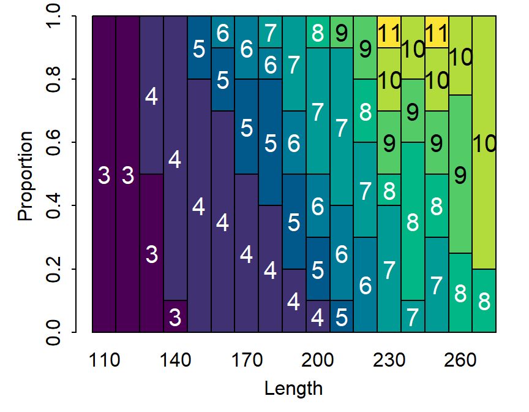
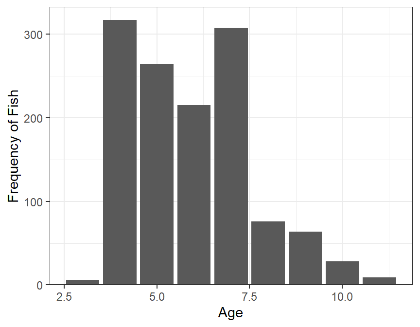
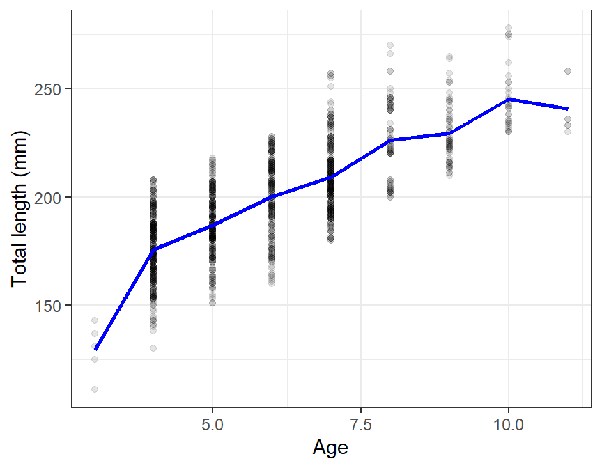

library(FSA)
library(tidyverse)
library(ggplot2)
rb <- read.csv("https://raw.githubusercontent.com/droglenc/FSAdata/master/data-raw/RockBassLO2.csv") %>%
mutate(lcat10=lencat(tl,w=10,as.fact=TRUE))
rba <- filter(rb,!is.na(age))
rbl <- filter(rb,is.na(age))
## Summary tables for aged sample
xtabs(~lcat10,data=rba)
xtabs(~age,data=rba)
## Make ALK
agelendist <- xtabs(~lcat10+age,data=rba)
alk <- prop.table(agelendist ,margin=1)
alkPlot(alk)
## Apply the ALK
rblmod <- alkIndivAge(alk,age~tl,data=rbl)
headtail(rbl)
headtail(rblmod)
## Combine two dfs with ages and compute some summaries
rbamod <- rbind(rba,rblmod)
(agedist <- xtabs(~age,data=rbamod))
(lendist <- xtabs(~lcat10,data=rbamod))
lenatage <- rbamod %>%
group_by(age) %>%
summarize(n=n(),
mntl=mean(tl),
sdtl=sd(tl))
lenatage
ggplot(data=rbamod,mapping=aes(x=age)) +
geom_bar() +
scale_x_continuous(name="Age") +
scale_y_continuous(name="Frequency of Fish",expand=expansion(c(0,0.05))) +
theme_bw()
ggplot() +
geom_point(data=rbamod,mapping=aes(x=age,y=tl),color=col2rgbt("black",1/10)) +
geom_line(data=lenatage,mapping=aes(x=age,y=mntl),color="blue",size=1) +
scale_x_continuous(name="Age") +
scale_y_continuous(name="Total length (mm)") +
theme_bw()